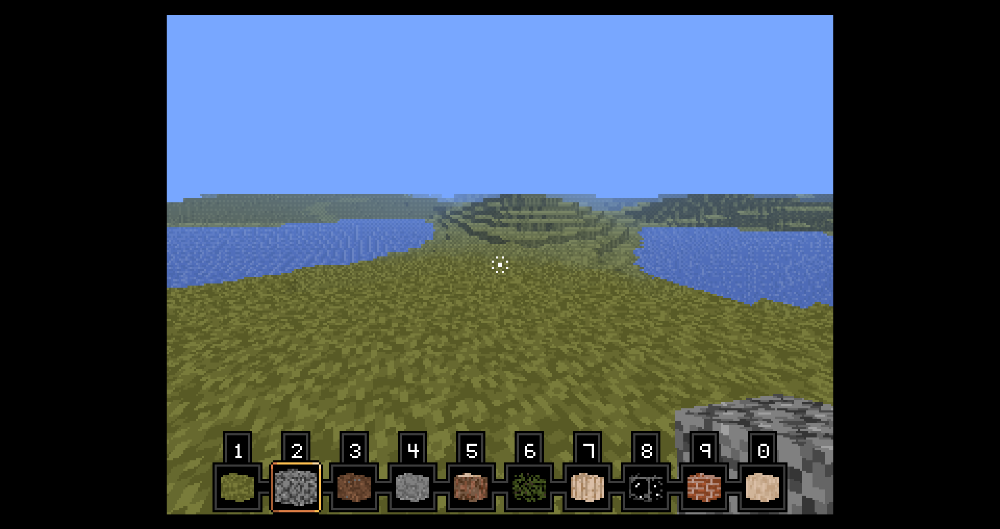
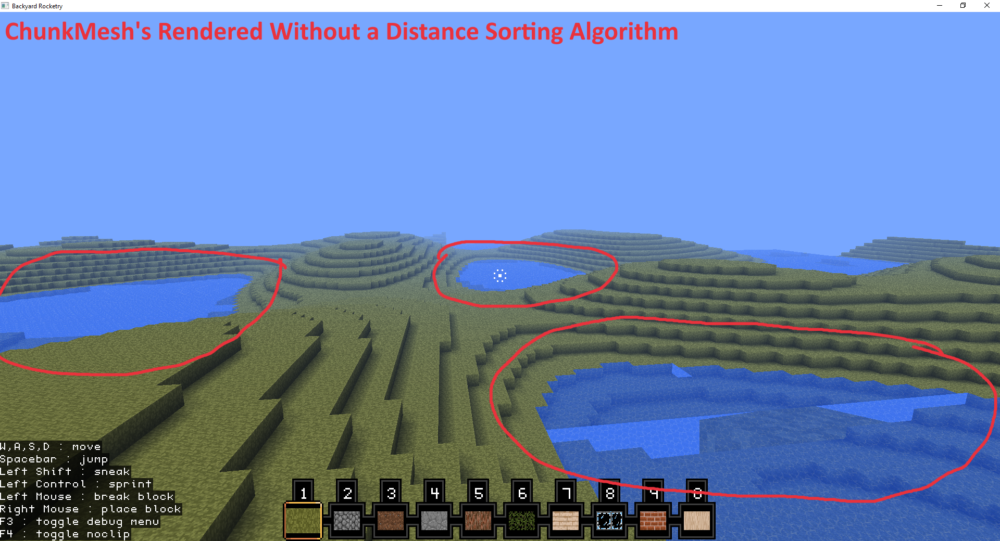

As with most games, style is important.
Without choosing a style, one will eventually run into clashing art within his or her project.
This problem can be observed in the many textures of Minecraft around 2015.
For my voxel game, I decided to stick with a style that is easy to maintain, has charm, and is unique. (compared to other voxel games)
I chose to make the style of its graphics' based on that of the PlayStation 1 (PS1).
I have limited the resolution to a *crisp* 320x240 and have implemented vertex snapping to simulate the artifacting of the PS1.

My reasoning for choosing this style has been the relatively recent boom in PS1-styled indie games.
Many people have a fond nostalgia for this style, and there is (to my knowledge) not yet a voxel game with this style.
I have yet to decide if I should replace the textures with a higher resolution or different style to match the PS1's capabilities.
As a side-note, I have also removed the translucency of water which was JUST added in the previous update.
Furthermore, I have added audio!
It's still in its infancy, so I don't have much to show, but I will demonstrate sound in the next gameplay video.
For now, enjoy this code snippet taken from the Button class demonstrating how simple playing a sound really is.
The playAudio method of the AudioManager class accepts 4 parameters. (or 3 if you want the audio to free from memory upon finishing playback)
The signature of the playAudio method is
audio -> parameter is the buffer containing the audio data you want to play.
looping -> determines whether the sound should stop or loop when playback finishes.
relative -> determines whether the sound should be interpreted/listened from the global audio listener's spatial values such as position.
shouldFree -> determines whether the AudioPlayer returned from this method should be freed from memory upon finishing playback.
If the method is called without the final argument, the default behavior is to free the player from memory and the end of the playback.
Of course, you could just visit the
GitHub
repo for the project and view the code for the method yourself.
On this day, (roughly) I finished implementing ambient occlusion with the help of this article
written by the people at SPACEFARER.
I also added the ability to define translucent blocks.
To implement translucency in chunk meshes, I needed to add an algorithm to sort their draw order.
Without this algorithm, the rendering would look like this:

You can see several artifacts in the viewport.
For example, the held item is rendered behind the chunks and the water's translucency cuts off the rendering of other chunks farther away.
The way the sorting algorithm works is a simple distance check. The renderer has a list of renderables.
It first uses java.util.List.sort() to sort the list of renderables based on their distance to the camera.
Finally the renderer loops through the renderables and renders each on to the screen.
As you may have seen in the above video, this method fixes the rendering bugs previously mentioned.
I have now added a very basic fog effect along with directional lighting.
To implement directional lighting I had to change the way models are loaded.
Before, models only needed vertices, indices, and UVs; however, directional lighting requires normals.
Most games decide to add a normal vector per vertex.
Since Backyard Rocketry is a voxel game and sharp edges are expected in models, I decided I could get away with having a normal vector per face only.
This saves space in the block model's file since I will not need to write the normal for every vertex.
The shader used for chunk meshes still requires each vertex to have a normal however, so I made the game add normals to the chunk mesh at runtime.
At the beginning of the game the normals are stored per face. When a chunk is meshing, it then duplicates the face's normal on every vertex.
Also, the fog I added is just the very simple fog effect almost every old game used. It is simply a distance check from the eye level of the camera.